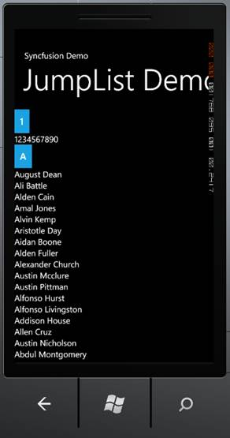

To create a Windows Phone application and deploy Essential Tools for Windows Phone, refer to section 3 Getting Started. This section covers how to add Jump List control to this application.
The JumpList control can be added to the application using either Xaml or procedural code. The following code illustrartes this:
|
[Xaml]
<code> <syncfusion:JumpList Name="jumplist" Width="460" ItemsSource="{Binding}"> <syncfusion:JumpList.CategoryProvider> <syncfusion:FirstLetterCategoryProvider /> </syncfusion:JumpList.CategoryProvider> </syncfusion:JumpList> </code>
|
|
[C#]
JumpList jumplist = new JumpList(); jumplist.Width = 460; FirstLetterCategoryProvider FLC = new FirstLetterCategoryProvider(); jumplist.CategoryProvider = FLC; jumplist.ItemsSource = this.LoadDataSource(); ContentPanel.Children.Add(jumplist);
|

Figure 51: Jump List Control